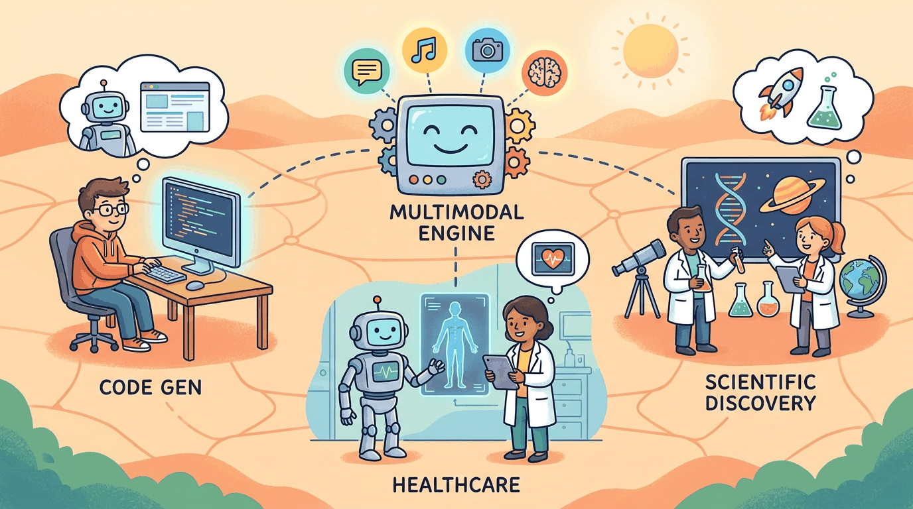

a Kurzgesagt-meets-XKCD visual metaphor with friendly characters and clear iconography, capturing the theme: Multimodal models and real-world LLM applications across industries, from code generati..."The eye sees only what the mind is prepared to comprehend."
Robertson Davies
Part Overview
Part VII covers the practical application of LLMs across modalities and industries. It opens with multimodal AI (vision, audio, video, documents) and then provides in-depth treatment of LLM applications in software engineering, finance, healthcare, cybersecurity, education, and scientific discovery. Each application domain receives substantial coverage of key techniques, code patterns, case studies, and domain-specific tools.
Chapters: 2 (Chapters 27 and 28). These chapters connect the technical foundations from Parts I through VI to real-world deployment scenarios, domain-specific challenges, and industry best practices.
Language is just one modality. Part VII extends your LLM knowledge to vision, audio, and cross-modal systems, then surveys the rich landscape of LLM-powered applications from code generation to healthcare. Understanding multimodal capabilities prepares you for the convergence of AI modalities that is shaping the next generation of products.
Beyond text: vision-language models, image generation (diffusion, DALL-E, Stable Diffusion), audio and speech models, video generation, and building multimodal applications.
- 26.1 Image Generation & Vision-Language Models
- 26.2 Audio, Music & Video Generation
- 26.3 Document Understanding & OCR
- 26.4 Unified Multimodal Models & Omni-Architectures
- 26.5 Embodied Multimodal Agents & Vision-Language-Action Models
- 26.6 LLM-Powered Robotics: Navigation, Planning, and Multi-Robot Coordination
- 26.7 3D Gaussian Splatting and Neural Scene Representation
Real-world LLM applications across industries: code generation, healthcare, finance, legal, education, content creation, and domain-specific deployment patterns.
What Comes Next
Continue to Part VIII: Evaluation and Production, where we ensure your LLM systems work reliably with evaluation, observability, and production engineering.